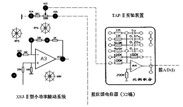

1. 熟悉自动控制系统的实验调整技术；
2.初步掌握控制系统参数的设置和调整方法。
实验分两步进行，第一步：根据设计任务，利用课余时间完 成初步设计；第二步：利用实验装置完成系统的调试或参数的修改，使之满足 性能指标的要求（未完成初步设计的同学，不得进行实验）。参考方框图、原理图：
按实验三测定的元件参数，设计一位置随动系统，满足性能指标的要求。 系统的性能指标要求：
σ %≤30 ts ≤0.4s （误差按5%） 稳态误差≤2。
1）位置随动系统开环传递函数为：G0(s)=k/[S(TmS+1)] 各参数按实验三测定的数值。方框图如下：
2）绘出系统的动态结构图，并求出系统的闭环传递函数；
3）根据闭环传递函数，计算系统的性能指标σ%、ts，（可利用物理系网站上提供的控制系统模拟实验软件进行仿真）并绘出阶跃响应曲线。
4）将A2作为放大倍数可调的单元（通过调整RP5改变系统的开环增益）
5）可按最佳二阶系统的设计方法进行设计。
1）按初步设计连接各单元（方框图可参考图2）。系统的阶跃响应曲线，可参照实验三的方法获取，为避免反 馈电位器输出值超出A/D允许的输入范围（5V），建议反馈电位器输出端（X2）和A/D的输入端按下图连接：
2）实验注意事项： 当加入输入信号，出现电动机连续旋转现象，应立即关断电源，改变反馈电位器的极性后，方可重新进行实验（为什么？）； 输入信号的数值，应使系统工作在线性状态。